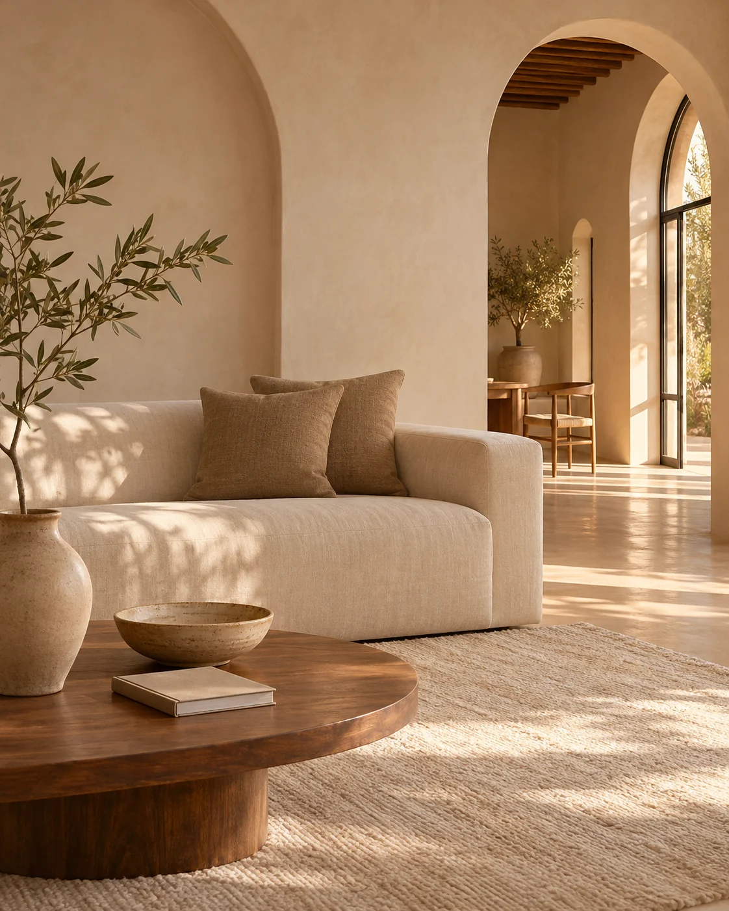

01
Nounous
Une présence pour accompagner vos enfants, selon leur âge, votre organisation et les horaires souhaités.
GARDE D’ENFANTS · VIE DE FAMILLEParlons de votre besoinLE LIEN QUI FAIT LA DIFFÉRENCE
Une nounou, une femme de ménage, une employée de maison. Maison & Liens vous accompagne dans votre recherche, avec une approche humaine et attentive à votre quotidien.

01 — POUR VOTRE QUOTIDIEN
Chaque foyer a ses habitudes.
Le premier pas, c’est de comprendre les vôtres.
Une présence pour accompagner vos enfants, selon leur âge, votre organisation et les horaires souhaités.
GARDE D’ENFANTS · VIE DE FAMILLEParlons de votre besoinDe l’aide pour l’entretien de votre intérieur, à la fréquence qui correspond à votre rythme de vie.
ENTRETIEN · CONFORT AU QUOTIDIENParlons de votre besoinUn soutien dans les tâches de la maison, avec des missions et une organisation à définir ensemble.
AIDE À DOMICILE · ORGANISATIONParlons de votre besoin02 — UNE RENCONTRE, AVANT TOUT
Accueillir quelqu’un chez soi commence par un échange. Nous prenons le temps de comprendre votre recherche pour faciliter la rencontre avec une candidate.
Vos besoins, les disponibilités et les attentes de chacune permettent de préparer la suite.
Vous précisez votre ville, les missions et le rythme souhaité.
Nous étudions votre demande selon les profils et les disponibilités.
Vous échangez avec la candidate pour convenir des conditions et de l’organisation.
VOUS CHERCHEZ UN EMPLOI ?
Vous êtes nounou, femme de ménage ou employée de maison ? Présentez-nous votre expérience, votre ville et vos disponibilités.
Présenter ma candidature03 — EN TOUTE SIMPLICITÉ
Une question plus précise ?
Nous sommes à votre écoute.
Les demandes concernent notamment Casablanca, Rabat, Agadir et Marrakech. Pour une autre ville au Maroc, contactez-nous afin d’échanger sur les possibilités.
Appelez-nous ou utilisez le formulaire ci-dessous pour préparer un message WhatsApp. Précisez le type d’aide recherché, votre ville et les horaires souhaités.
Les frais éventuels de mise en relation, la rémunération et l’organisation sont à préciser directement avec votre interlocutrice et les personnes concernées avant tout engagement.
Oui. Choisissez « Je cherche un emploi » dans le formulaire, puis indiquez votre métier, votre expérience et vos disponibilités. Les possibilités dépendent des demandes et des profils recherchés.
Après un premier échange sur vos besoins, nous vous informons des possibilités. Vous pourrez ensuite discuter des missions, des horaires et des conditions avec la personne proposée, selon les disponibilités.
ET SI ON EN PARLAIT ?
Un besoin à la maison ou une recherche d’emploi : choisissez votre situation, puis préparons votre premier échange.
+212 781 863 430APPELS & WHATSAPP Écrire directement sur WhatsApp